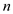
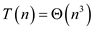
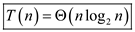
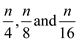
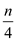
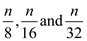
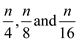
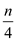
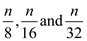
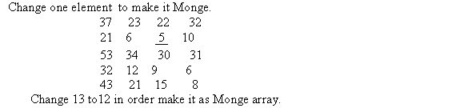

Consider the Master theorem provided in Theorem 4.1 of section
4.5. This theorem is used to determine the asymptotic bound of
recurrence .
.
a.
Consider the following recurrence:
For this recurrence,
Therefore,  becomes
becomes
Since, , where
.
, where
.
Also,
Now solve the above equation to find the value of  .
.
So, and .
Therefore, Case 3 of master theorem can be applied on this recurrence.
Hence, solution becomes .
b.
Consider the following recurrence:
For this recurrence,
Therefore, becomes
Since, , where
Also,
Now solve the above equation to find the value of .
So, and
Therefore, Case 3 of master theorem can be applied on this recurrence.
Hence, solution becomes.
c.
Consider the following recurrence:
For this recurrence
Therefore, becomes
Since, .
Therefore, Case 2 of master theorem can be applied on this recurrence.
Hence, solution becomes.
d.
Consider the following recurrence:
For this recurrence
Therefore, becomes
The value of lies in between 1 and 2.
Since,, where

Also,
Now solve the above equation to find the value of .
So, and .
Therefore, Case 3 of master theorem can be applied on this recurrence.
Hence, solution becomes.
e.
Consider the following recurrence:
For this recurrence
Therefore, becomes
The value of lies in between 2 and 3
Since,, where
.
Therefore, Case 1 of master theorem can be applied on this recurrence.
Hence, solution becomes.
f.
Consider the following recurrence:
For this recurrence

becomes
Since,.
Therefore, Case 2 of master theorem can be applied on this recurrence.
Hence, solution becomes.
g.
Consider the following recurrence:
The above recurrence can be evaluated by using the substitution method. On applying the substitution method, the recurrence relation is given as,
In general, the above recurrence leads to,
Now, let
So, the above equation can be rewritten as,
From the above solution, the series is the sum of squares of natural even numbers.
Therefore, the sum of squares of series of first even natural numbers is,
So, the above obtained expression
is given as,
From the above it is clear that .
Therefore, by using the substitution method the asymptotic notation is obtained as Hence, solution becomes.
Binary search algorithm searches an element by comparing it with middle element. If element to be searched is equals to the middle element then it returns position where the element is found.
If element to be searched is greater than middle element then
lower bound becomes  and upper
bound remains same.
and upper
bound remains same.
If element to be searched is smaller than middle element then upper bound becomes and lower bound remains same. Search continues until the element.
a.
1. When an array is passed by a pointer to binary search function:
Recurrence for binary search when array is passed as a pointer is,
Use master theorem to solve the above recurrence.
For this recurrence
Therefore, becomes
Since,
Therefore Case 2 of master theorem can be applied on this recurrence.
Hence, the solution is.
2. When whole array is passed by copying, instead of pointer, to binary search function:
Recurrence for binary search when array is passed is,
Hence, the solution is.
3. When an array is passed by copying such that only the sub range of size n can be accessed by the binary search function:
Recurrence for binary search when array is passed sub range is,
Use master theorem to solve above recurrence.
For this recurrence
Therefore, becomes
Since, where
Also,
, Where
Therefore Case 3 of master theorem can be applied on this recurrence.
Hence, the solution is.
b.
Merge sort is a divide and conquer algorithm. It divides the unsorted list into n sub lists. Each list contains one element. Then it merges these sub lists to generate a single sorted array.
1. When an array is passed by a pointer to merge sort function:
Recurrence for merge sort when pointer is passed to merge sort function is,
Use master theorem to solve above recurrence.
For this recurrence
Since,
Therefore Case 2 of master theorem can be applied on this recurrence.
Hence, the solution is.
2. When whole array is passed by copying, instead of pointer, to merge sort function:
Recurrence when array is passed by copying in merge sort is,
Hence, the solution is .
.
3. When an array is passed by copying such that only the sub range of size n can be accessed by merge sort function:
Recurrence when array is passed by copying in merge sort is,
Use master theorem to solve above recurrence.
For this recurrence
Therefore, becomes
Since,
Therefore Case 2 of master theorem can be applied on this recurrence.
Hence, the solution is.
Consider the Master theorem that can be used to determine the
asymptotic bound of recurrence . Also
consider substitution method also to determine asymptotic bounds on
the recurrence T(n).
. Also
consider substitution method also to determine asymptotic bounds on
the recurrence T(n).
Consider the following recurrence:
For this recurrence
Therefore, becomes.
The value of  lies in
between 1 and 2. That is 1.261
lies in
between 1 and 2. That is 1.261
Since,, where
Therefore, by the case 1 of master theorem, the solution for the given recurrence is can be applied on this recurrence.
Hence, solution is
Consider the following recurrence:
Substitute T(n) values recursively, in the above recurrence relation.
The above series is in harmonic progression series
Therefore, there sum can be written as
Hence, solution is .
Consider the following recurrence:

For this recurrence
Therefore, becomes
Since,, where
Also,
Therefore, by case 3 of master theorem the solution for the given recurrence is =.
Hence, solution becomes
Consider the following recurrence:
For this recurrence ignore the constant -2.
Therefore, becomes.
 , by case 2
of master theorem the solution for the given recurrence is
, by case 2
of master theorem the solution for the given recurrence is
 .
.
Hence, solution is .
Consider the following recurrence:
Substitute T(n) values recursively, in the above recurrence relation.
The above series is harmonic progression series
Therefore, there sum can be written as
Hence, solution becomes.
Consider the following recurrence:
Initially n is divided into. Further
 is
divided into, also
is
further divided into  and so
on.
is
divided into, also
is
further divided into  and so
on.
From above it, can be concluded that
Substitution method is used in following evaluation to show that
Hence,
Hence,
Consider the following recurrence:
Substitute T(n) values recursively, in the above recurrence relation.
Hence, solution becomes.
Consider the following recurrence:
Substitute T(n) values recursively, in the above recurrence relation.

Hence, solution becomes.
Consider the following recurrence:
This can be evaluate as
Hence, solution becomes.
Consider the following recurrence:

Apply substitution method on the above recurrence relation.
Guess T(n) = .
Thus, it is enough to prove that, T(n)  .
.
Assume recurrence
Substituting value into the recurrence yields

Hence, solution becomes.
The properties of Fibonacci numbers are depicted by the following recurrence:
The generating function is
mathematically defined as follows:
is
mathematically defined as follows:
Here, is the ith Fibonacci number.
a.
Consider the following expression:
Hence, the expression is proved.
b.
Consider the following equation:
c.
Consider the following function:

Recall the generating function F as follows:
Thus,
Hence, the expression is
proved.
d.
Consider the following expression:
The absolute value of the second base is .
Hence, for all i.
From (c), use the following and proceed as follows:
Here, the second term is less than 1/2 in absolute value.
Consider there are n chips which have capability to check the other chip. The professor’s jig can check only 2 chips at a time. A good chip always provides the accurate result whereas the bad chip result is not trustable.
• Suppose, there are k good chips which always provide
the accurate result. Therefore, there are bad chips
which provide inaccurate result.
bad chips
which provide inaccurate result.
• As it is also provided that number of bad chips are greater than number of good chips.
• When bad chips are loaded with good chips in jig, then the bad chips declare themselves as good chips and say other chips are bad. Similarly, the good chips declare themselves as good chips and say other chips are bad.
• The conclusion will always state that at-least one is bad and thus the professor may not conclude which chip is good and which chip is bad.
Therefore no strategy based on pairwise test is useful to determine which chip is good, if the set of chips contains bad chips more than half of size.
Consider the following steps to reduce the number of chips to half the size:
• First divide the n chips into two groups.
• Now, take two chips, one from each group, and apply pairwise test.
• Select chips when conclusion is both are good, or both are bad.
• Remove all the pairs which conclude at least one is bad. All these pairs contain one bad chip and one good chip. That is, when removing this type of pair, one good chip and a bad chip is removed.
• So after testing all pairs, the number of reaming chips is one of nearly half the size.
• Since previously, equal number of bad chips and good chips are removed, for the remaining n/2 chips, the statement ‘more than n/2 of the chips are good’, still holds.
• So, after removing these chips, user will have n/2 chips with good chips more than half.
• Repeat the above steps until only a good chip is left. Each iteration takes comparisons and makes the size of the remaining chips to half.
Hence, only comparisons are required to reduce the number chips to half.
• In pairwise test at first comparison
are performed to compare n chip. After that, comparisons
are made to compare chip. The
comparison goes on till only one chip is left.
• Therefore the recurrence relation becomes:
For this recurrence
Therefore, becomes
• Since,, where .
Therefore, Case 3 of master theorem can be applied on this recurrence.
Hence, solution becomes
